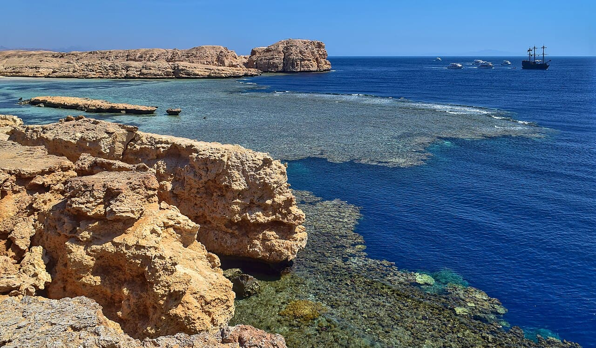

Ras Muhammad
Charm el-Cheikh, Égypte · plongée, snorkeling

Parc national à la pointe du Sinaï : jardins de corail éclatants et murs de poissons en mer Rouge.
- Lieu
- Charm el-Cheikh, Égypte
- Niveau
- Intermédiaire
- Activités
- plongée, snorkeling
- Type d'eau
- Mer / océan
- Coordonnées
- 27.72, 34.25 (position approximative du secteur)
Dangers à connaître
- Courant possible aux pointes.
- Coraux fragiles, garde tes distances.
Le conseil d'Ocean Buddy
Shark & Yolanda Reef est le tombant incontournable.
Ouvrir dans Ocean Buddy Télécharger sur l'App Store
Source : Description historique Ocean Buddy · vérification externe en attente.